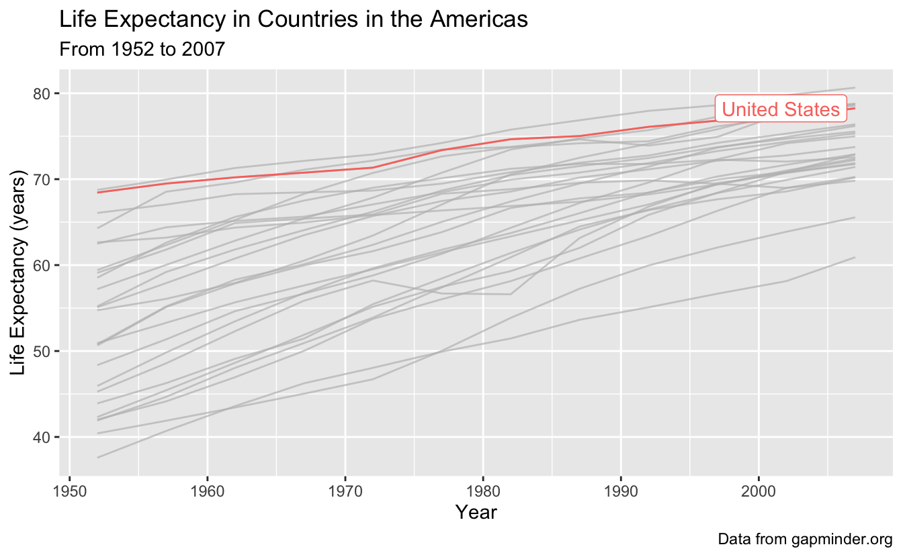

Session 10: Faceting, multi-plots, and animating
Getting up close and personal with our data
 Artwork by @allison_horst
Artwork by @allison_horst
Prep homework
Basic computer setup
-
If you didn’t already do this, please follow the Code Club Computer Setup instructions, which also has pointers for if you’re new to R or RStudio.
-
If you’re able to do so, please open RStudio a bit before Code Club starts – and in case you run into issues, please join the Zoom call early and we’ll help you troubleshoot.
New to ggplot?
Check out the two Code Club pages for Session 4 and Session 5.
If you’ve never used ggplot2 before (or even if you have), you may find this cheat sheet useful.
Getting Started
RMarkdown for today’s session
# directory for Code Club Session 2:
dir.create("S10")
# directory for our RMarkdown
# ("recursive" to create two levels at once.)
dir.create("S10/Rmd/")
# save the url location for today's script
todays_R_script <-
'https://raw.githubusercontent.com/biodash/biodash.github.io/master/content/codeclub/10_faceting-animating/Session10_faceting_animating_multifigs.Rmd'
# indicate the name of the new script file
Session10_Rmd <- "S10/Rmd/Session10_faceting_animating_multifigs.Rmd"
# go get that file!
download.file(url = todays_R_script,
destfile = Session10_Rmd)1 - How can I do more with my figures?

Artwork by Allison Horst
Sometimes we have so much data that it is difficult to make sense of it if we look at it all at once. One way to get around this is to create facets in your data – small subplots that help you to see different relationships among different variables in your dataset.
Today we will be using ggplot2 to make a series of plots that help us better understand the underlying structure in our dataset.
What will we go over today
These functions or packages will help you to get better visualize with your data.
facet_wrap()andfacet_grid()- makes small multiple plots based on some variable.- set
scalesto indicate the linked or not-linked nature of your axes in a faceted plot gghighlight()- allows you to direct focus on a particular portion of your data.patchwork- to compose super easy multi-plot figuresgganimate- to make your plots gif!
I will also go over a few tricks along the way.
2 - Accessing our data
Let’s get set up and grab some data so that we can learn more about this world (and ggplot2)
- You can do this locally, or at OSC. You can find instructions if you are having trouble here.
First load your libraries. We are using a lot of new packages today.
If you’ve never downloaded these packages before, use the chunk below.
install.packages(c("gghighlight",
"gganimate",
"magick",
"patchwork",
"ggrepel",
"gapminder"))Once you have the packages above downloaded, load your libraries.
library(tidyverse)
library(gghighlight) # for bringing attention to certain parts of your plot
library(gganimate) # for animating
library(magick) # for rendering gifs and saving them
library(patchwork) # for making multi-panel plots
library(ggrepel) # for getting labels to not be on top of your points
# data for today
library(gapminder)Then let’s access the dataset gapminder, which is both the name of the package, and the name of the dataset. It contains a subset of data from Gapminder.org, an educational non-profit aimed to fight global misconceptions about statistics of our world.

From Gapminder.org
Let’s look at the data in gapminder.
# look at the first 6 rows, all columns
head(gapminder)
#> # A tibble: 6 x 6
#> country continent year lifeExp pop gdpPercap
#> <fct> <fct> <int> <dbl> <int> <dbl>
#> 1 Afghanistan Asia 1952 28.8 8425333 779.
#> 2 Afghanistan Asia 1957 30.3 9240934 821.
#> 3 Afghanistan Asia 1962 32.0 10267083 853.
#> 4 Afghanistan Asia 1967 34.0 11537966 836.
#> 5 Afghanistan Asia 1972 36.1 13079460 740.
#> 6 Afghanistan Asia 1977 38.4 14880372 786.
# check the structure
# this tell us what is contained within our df
glimpse(gapminder)
#> Rows: 1,704
#> Columns: 6
#> $ country <fct> Afghanistan, Afghanistan, Afghanistan, Afghanistan, Afghani…
#> $ continent <fct> Asia, Asia, Asia, Asia, Asia, Asia, Asia, Asia, Asia, Asia,…
#> $ year <int> 1952, 1957, 1962, 1967, 1972, 1977, 1982, 1987, 1992, 1997,…
#> $ lifeExp <dbl> 28.801, 30.332, 31.997, 34.020, 36.088, 38.438, 39.854, 40.…
#> $ pop <int> 8425333, 9240934, 10267083, 11537966, 13079460, 14880372, 1…
#> $ gdpPercap <dbl> 779.4453, 820.8530, 853.1007, 836.1971, 739.9811, 786.1134,…This dataset contains the following measurements about the life expectancy, population, and GDP per capita for 142 countries from 1952 to 2007. It includes the following variables:
countrycontinentyearlifeExppopgdpPercap
Note, this data is already in tidy-style format meaning:
- Each variable must have its own column.
- Each observation must have its own row.
- Each value must have its own cell.
Learn more about tidy data here.
To make things a bit less complex, let’s look at data just from the Americas (i.e., North and South America). To do that, we can use filter() like we learned using dplyr back in Code Club Session 2
# make a df with data only from the Americas
gapminder_americas <- gapminder %>%
filter(continent == "Americas")
# what countries do we have?
unique(gapminder_americas$country)
#> [1] Argentina Bolivia Brazil
#> [4] Canada Chile Colombia
#> [7] Costa Rica Cuba Dominican Republic
#> [10] Ecuador El Salvador Guatemala
#> [13] Haiti Honduras Jamaica
#> [16] Mexico Nicaragua Panama
#> [19] Paraguay Peru Puerto Rico
#> [22] Trinidad and Tobago United States Uruguay
#> [25] Venezuela
#> 142 Levels: Afghanistan Albania Algeria Angola Argentina Australia ... Zimbabwe3 - Life expectancy vs. time
We will plot the relationship between lifeExp and year with the goal of understanding how life expectancy has changed in the second half of the 20th century. We will use geom_line() to make a line plot.
gapminder_americas %>%
ggplot(aes(x = year, y = lifeExp, group = country, color = country)) +
geom_line()

This plot has so many countries, and we can only visually distinguish colors so well, that it makes this a bit of a mess. We can do better!
4 - Highlighting
What if we want to highlight one country of interest, with the backdrop of all the data in the Americas? We can do this using gghighlight(), which will distinguish our country of interest, from the rest of the countries which will be indicated in gray.
Let’s highlight the United States, and since we are at it, let’s also add x and y axis labels, a title, subtitle, and caption with labs().
gapminder_americas %>%
ggplot(aes(x = year, y = lifeExp, group = country, color = country)) +
geom_line() +
gghighlight(country == "United States") +
labs(x = "Year",
y = "Life Expectancy (years)",
title = "Life Expectancy in Countries in the Americas",
subtitle = "From 1952 to 2007",
caption = "Data from gapminder.org")
#> Warning: Tried to calculate with group_by(), but the calculation failed.
#> Falling back to ungrouped filter operation...
#> label_key: country

5 - Faceting
What if we want to see all the data at once, but just be able to better attribute each line to the correct country? We can use the principle of small multiples, popularized by Edward Tufte, to make a series of charts all on the same scale to allow comparison between them easily.
We can facet using facet_wrap to create small plots for each country. If you want a certain number of rows or columns you can indicate them by including ncol and nrow in the facet_wrap() statement.
I have also made the strip text, or the label on top of each of the facets bigger using theme.
gapminder_americas %>%
ggplot(aes(x = year, y = lifeExp, color = country)) +
geom_line() +
theme(strip.text.x = element_text(size = 14)) +
facet_wrap(vars(country)) + # facet_wrap(~country) also works
labs(x = "Year",
y = "Life Expectancy (years)",
title = "Life Expectancy in Countries in the Americas",
subtitle = "From 1952 to 2007",
caption = "Data from gapminder.org")

Now our legend is not necessary, so let’s remove it. Let’s also remove the gray background since its not really doing much for us. We will also change to theme_minimal() to get rid of the grey background which I don’t think we need.
gapminder_americas %>%
ggplot(aes(x = year, y = lifeExp)) +
geom_line(aes(color = country)) +
theme_minimal() +
theme(legend.position = "none",
strip.text.x = element_text(size = 14)) +
facet_wrap(~country) +
labs(x = "Year",
y = "Life Expectancy (years)",
title = "Life Expectancy in Countries in the Americas",
subtitle = "From 1952 to 2007",
caption = "Data from gapminder.org")

Wow better! But now its a bit hard to contextualize the line for each country to the whole dataset. We can fix this too.
6 - Highlighting plus faceting
Let’s bring the rest of data back in, and highlight in each facet the country of interest. We can do this by just adding gghighlight() to our ggplot call.
Note: if you want to assign something in R to an object, and then view it, you can put the whole thing in parentheses, without having to call that object back at the end.
(americas_lifeexp <- gapminder_americas %>%
ggplot(aes(x = year, y = lifeExp)) +
geom_line(aes(color = country)) +
gghighlight() +
theme_minimal() +
theme(legend.position = "none",
strip.text.x = element_text(size = 14)) +
facet_wrap(~country) +
labs(x = "Year",
y = "Life Expectancy (years)",
title = "Life Expectancy in Countries in the Americas",
subtitle = "From 1952 to 2007",
caption = "Data from gapminder.org"))
#> label_key: country
#> Too many data series, skip labeling

Wow, we now have so much more information about our data!
7 - Adjusting scales while faceting
The default in faceting is that the x and y-axes for each plot are all the same. This aids in the interpretation of each small plot in relation to the others, but sometimes you may want freedom to adjust your axes.
For example, if we wanted to plot population over time, if we used the same scale, it would be really hard to see trends within a country.
(americas_pop <- gapminder_americas %>%
ggplot(aes(x = year, y = pop)) +
geom_line(aes(color = country)) +
theme_minimal() +
theme(legend.position = "none",
strip.text.x = element_text(size = 14)) +
facet_wrap(~country) +
labs(x = "Year",
y = "Population",
title = "Population in Countries in the Americas",
subtitle = "From 1952 to 2007",
caption = "Data from gapminder.org"))

Let’s change the scales so that the y-axis is “free” - i.e., each plot will have an independent y-axis. Note, when you do this, you aren’t really using the principle of small multiples anymore, since the data isn’t all on comparable scales.
gapminder_americas %>%
ggplot(aes(x = year, y = pop)) +
geom_line(aes(color = country)) +
theme_minimal() +
theme(legend.position = "none",
strip.text.x = element_text(size = 14)) +
facet_wrap(~country,
scales = "free_y") +
labs(x = "Year",
y = "Population",
title = "Population of Countries in the Americas",
subtitle = "From 1952 to 2007",
caption = "Data from gapminder.org")

The default for scales is "fixed", but you can also set to be "free_x", "free_y", or "free", which means both x and y are free.
8 - Multi-panel plots
What if I take plots I’ve already made and assemble them together? You can do that simply with the package patchwork().

Artwork by Allison Horst
You can use the syntax:
plot1 + plot2to get two plots next to each otherplot1 / plot2to get two plots stacked verticallyplot1 | (plot2 + plot3)to get plot1 in the first row, and plots 2 and 3 in a second row
You can use plot_annotation() to indicate your plots with letters or numbers.
I am going to make some quick plots so we can see how it works. Let’s look at some plots of the United States.
# make df with just United States data
gapminder_usa <- gapminder %>%
filter(country == "United States")
# make some plots
(usa_lifeexp <- gapminder_usa %>%
ggplot(aes(x = year, y = lifeExp)) +
geom_point())

(usa_gdppercap <- gapminder_usa %>%
ggplot(aes(x = year, y = gdpPercap)) +
geom_line())

(usa_pop <- gapminder_usa %>%
ggplot(aes(x = year, y = pop)) +
geom_col())

Let’s make multi-panel plots. If you need to wrap around a line, make sure you don’t start your line with the +, it won’t work (this is true for all ggplot2 syntax).
(usa_lifeexp + usa_gdppercap) / usa_pop +
plot_annotation(title = "Some plots about the United States",
tag_levels = "A")

You can see how this would be really useful for publications!
9 - Animating

Artwork by Allison Horst
Since we have time-scale data here, we could also build an animation that would help us look at our data. What if we wanted to look at how life expectancy (lifeExp) and population (pop) change over time? We could animate over the variable year, and do this by using the function animate(), and set transition_states() to the variable we are giffing over.
Note, I have included closest_state in the subtitle so the viewer can see what is the year at any stage of the animation.
To be able to tell which dot belongs to which country, I added a geom_text_repel() statement, which labels each point but is smart enough to not let the labels overlap.
I have also set pop to be on a log10 scale.
If you want to increase the resolution of your gif, and set the code chunk to cache = TRUE if the chunk runs slowly, so that it doesn’t re-run when knitting if nothing has been edited, you can do this in the curly brackets at the top of your chunk, like this:
{r, cache = TRUE, dpi = 600}
# install.packages("transformr")
# if you are having problems with gganimate you may need to install transformr
(p <- ggplot(gapminder_americas, aes(x = lifeExp, y = pop, fill = country, label = country)) +
geom_point(shape = 21, color = "black") +
geom_text_repel() +
scale_y_log10() +
theme_classic() +
theme(legend.position = 'none') +
labs(title = "Population and Life Expectancy in the Americas",
subtitle = 'Year: {closest_state}',
x = "Life Expectancy",
y = "Log10 Population") +
transition_states(year))

There are many different ways to transition your data in gganimate - and you can learn more about them here.
Saving my gif
Now I want to save my gif. We can do that simply with the function anim_save() which works a lot like ggsave().
# set parameters for your animation
animate(p,
duration = 10,
fps = 10,
width = 700,
height = 700,
renderer = magick_renderer())
# save it
anim_save(filename = "gapminder_gif.gif",
animation = last_animation(),
path = "/Users/jessicacooperstoneimac")10 - Breakout rooms
Loading data and get set up
Load the palmerpenguins dataset, look at its structure, and view the beginning of the df.
library(palmerpenguins)
str(penguins)
#> tibble [344 × 8] (S3: tbl_df/tbl/data.frame)
#> $ species : Factor w/ 3 levels "Adelie","Chinstrap",..: 1 1 1 1 1 1 1 1 1 1 ...
#> $ island : Factor w/ 3 levels "Biscoe","Dream",..: 3 3 3 3 3 3 3 3 3 3 ...
#> $ bill_length_mm : num [1:344] 39.1 39.5 40.3 NA 36.7 39.3 38.9 39.2 34.1 42 ...
#> $ bill_depth_mm : num [1:344] 18.7 17.4 18 NA 19.3 20.6 17.8 19.6 18.1 20.2 ...
#> $ flipper_length_mm: int [1:344] 181 186 195 NA 193 190 181 195 193 190 ...
#> $ body_mass_g : int [1:344] 3750 3800 3250 NA 3450 3650 3625 4675 3475 4250 ...
#> $ sex : Factor w/ 2 levels "female","male": 2 1 1 NA 1 2 1 2 NA NA ...
#> $ year : int [1:344] 2007 2007 2007 2007 2007 2007 2007 2007 2007 2007 ...
head(penguins)
#> # A tibble: 6 x 8
#> species island bill_length_mm bill_depth_mm flipper_length_… body_mass_g sex
#> <fct> <fct> <dbl> <dbl> <int> <int> <fct>
#> 1 Adelie Torge… 39.1 18.7 181 3750 male
#> 2 Adelie Torge… 39.5 17.4 186 3800 fema…
#> 3 Adelie Torge… 40.3 18 195 3250 fema…
#> 4 Adelie Torge… NA NA NA NA NA
#> 5 Adelie Torge… 36.7 19.3 193 3450 fema…
#> 6 Adelie Torge… 39.3 20.6 190 3650 male
#> # … with 1 more variable: year <int>Main exercises
Exercise 1
Like we did in Code Club 7, convert the two columns about penguin bill dimensions bill_length_mm and bill_depth_mm to two columns called bill_dimension and value. Drop your NAs also. Save this as a new df called penguins_long.
Hints (click here)
Use a combination of drop_na() and pivot_longer(), and it’s helpful if you also set names_prefix in your pivot_longer() statement but not totally necessary.
Solutions (click here)
penguins_long <- penguins %>%
drop_na() %>%
pivot_longer(cols = bill_length_mm:bill_depth_mm,
names_to = "bill_dimension",
values_to = "value_mm",
names_prefix = "bill_")
head(penguins_long)
#> # A tibble: 6 x 8
#> species island flipper_length_… body_mass_g sex year bill_dimension
#> <fct> <fct> <int> <int> <fct> <int> <chr>
#> 1 Adelie Torge… 181 3750 male 2007 length_mm
#> 2 Adelie Torge… 181 3750 male 2007 depth_mm
#> 3 Adelie Torge… 186 3800 fema… 2007 length_mm
#> 4 Adelie Torge… 186 3800 fema… 2007 depth_mm
#> 5 Adelie Torge… 195 3250 fema… 2007 length_mm
#> 6 Adelie Torge… 195 3250 fema… 2007 depth_mm
#> # … with 1 more variable: value_mm <dbl>Exercise 2
Plot body mass (body_mass_g) as related to bill length and depth.
Hints (click here)
Faceting will be useful here.
Solutions (click here)
penguins_long %>%
ggplot(aes(x = body_mass_g, y = value_mm)) +
geom_point() +
facet_wrap(vars(bill_dimension))

Exercise 3
Take your plot from Exercise 2 and make it prettier. You can do things like change your axis labels, add title, change themes as you see fit. Color your points by sex.
Hints (click here)
Pick a theme you like. theme_classic() is a good place to start, and if you want to download the package hrbrthemes, I really like the theme_ipsum_rc().
Solutions (click here)
I’ve included some code that let’s you re-name the strip text, or the text that is above each of your facets. You do this with the labeller() function.
library(hrbrthemes) # for pretty & easy themes
# formatting facet strip text labels
dim_mm <- c("Culman Bill Depth", "Culman Bill Length")
names(dim_mm) <- c("depth_mm", "length_mm")
# this is just one example
penguins_long %>%
ggplot(aes(x = body_mass_g, y = value_mm, color = sex)) +
geom_point() +
theme_ipsum_rc() +
theme(axis.title.x = element_text(hjust = 0.5),
axis.title.y = element_text(hjust = 0.5),
strip.text = element_text(hjust = 0.5)) +
labs(x = "Body Mass (g)",
y = "mm",
title = "Bill length and depth vs. body mass in penguins",
color = "Sex",
caption = "Data from https://allisonhorst.github.io/palmerpenguins/") +
facet_wrap(vars(bill_dimension),
labeller = labeller(bill_dimension = dim_mm))

Exercise 4
Add a second dimension of faceting by species.
Hints (click here)
You do this within your facet_wrap() call. You might want to try the formula syntax, which works like this: var1~var2.
Solutions (click here)
penguins_long %>%
ggplot(aes(x = body_mass_g, y = value_mm, color = sex)) +
geom_point() +
theme_ipsum_rc() +
theme(axis.title.x = element_text(hjust = 0.5),
axis.title.y = element_text(hjust = 0.5),
strip.text = element_text(hjust = 0.5)) +
labs(x = "Body Mass (g)",
y = "mm",
title = "Bill length and depth vs. body mass in penguins",
color = "Sex",
caption = "Data from https://allisonhorst.github.io/palmerpenguins/") +
facet_wrap(bill_dimension~species,
labeller = labeller(bill_dimension = dim_mm))

Exercise 5
Using your plot from Exercise 3, highlight the datapoints coming from Dream Island in purple.
Hints (click here)
You can use syntax inside gghighlight() just like you do in filter().
Solutions (click here)
# what are our islands?
unique(penguins_long$island)
#> [1] Torgersen Biscoe Dream
#> Levels: Biscoe Dream Torgersen
penguins_long %>%
ggplot(aes(x = body_mass_g, y = value_mm)) +
geom_point(color = "purple") +
gghighlight(island == "Dream") +
facet_wrap(vars(bill_dimension))

Exercise 6
Using your sample plot for Exercise 3, highlight penguins that have a body_mass_g less than 3500 g, in blue.
Hints (click here)
You can use syntax inside gghighlight() just like you do in filter(), and you can also use these filter functions like <, >, <=, ! and AND inside your call.
Solutions (click here)
# what are our islands?
unique(penguins_long$island)
#> [1] Torgersen Biscoe Dream
#> Levels: Biscoe Dream Torgersen
penguins_long %>%
ggplot(aes(x = body_mass_g, y = value_mm)) +
geom_point(color = "blue") +
gghighlight(island == "Dream") +
facet_wrap(vars(bill_dimension))

Bonus exercises
Bonus 1
Plot flipper_length_mm vs. body_mass_g and animate the plot to show only one species at a time.
Hints (click here)
Try animating over species, using transition_states() and set {closest_state} in your title or subtitle so you can tell what you’re looking at.
Solutions (click here)
flipper_by_BW <- penguins %>%
ggplot(aes(x = body_mass_g, y = flipper_length_mm, fill = species)) +
geom_point(shape = 21, color = "black") +
theme_classic() +
theme(legend.position = 'none') +
labs(title = "Population and Life Expectancy in the Americas",
subtitle = 'Penguin Species: {closest_state}',
x = "Body Mass (g)",
y = "Flipper Length (mm)") +
transition_states(species)
animate(flipper_by_BW)

Bonus 2
You have now made an excellent gif, so save it!
Hints (click here)
Use anim_save() to save your animation, which works in a similar way to ggsave(), which is another very useful function.
Solutions (click here)
# set parameters for your animation
animate(flipper_by_BW,
duration = 10,
fps = 10,
width = 700,
height = 700,
renderer = magick_renderer())
# save it
anim_save(filename = "flippers_by_mass.gif",
animation = last_animation(),
path = "YOUR_PATH_HERE")Bonus 3
Let’s practice making multi-panel plots. Plot:
Boxplot of body_mass_g by sex
Histogram of number of observations per island
Distribution of flipper_length_mm by species.
Tag your plots so each has a lowercase letter associated with it.
Hints (click here)
Use the syntax from the package patchwork. You can learn more here. Also use plot_annotation().
Solutions (click here)
titleallows you to set a titletag_levelsallows you to determine how you want your panels to be tagged.
Boxplot of body_mass_g by sex.
penguins_mass_by_sex <- penguins_long %>%
ggplot(aes(x = sex, y = body_mass_g)) +
geom_boxplot()
penguins_mass_by_sex

Histogram of number of observations per island.
penguins_by_island <- penguins_long %>%
ggplot(aes(y = island, fill = island)) +
geom_histogram(stat = "count")
#> Warning: Ignoring unknown parameters: binwidth, bins, pad
penguins_by_island

Distribution of flipper_length_mm by species.
penguins_flipper_species <- penguins_long %>%
ggplot(aes(x = flipper_length_mm, group = species, fill = species)) +
geom_density(alpha = 0.5) +
scale_fill_viridis_d()
penguins_flipper_species

penguins_flipper_species / (penguins_mass_by_sex + penguins_by_island) +
plot_annotation(title = "Looking at penguins...",
tag_levels = "a")